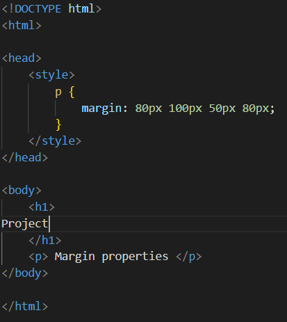
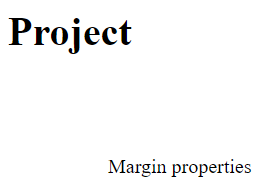
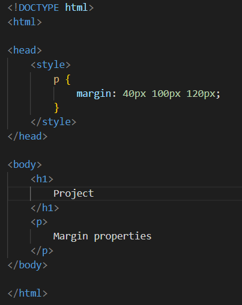
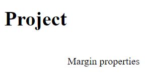
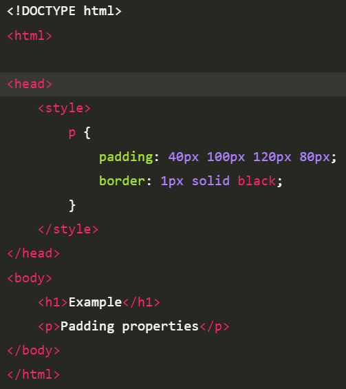
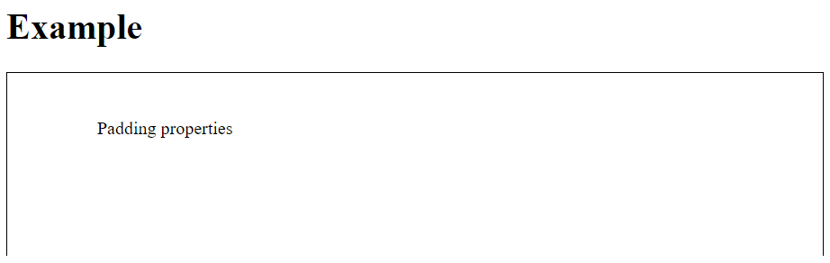

CSS Margins and Padding
In this article, we will learn about the CSS Margin & Padding properties of the Box Model & understand their implementation through the example.
CSS Margins: CSS margins are used to create space around the element. We can set the different sizes of margins for individual sides(top, right, bottom, left).
Margin properties can have the following values:
1.Length in cm, px, pt, etc.
2.Width % of the element.
Margin calculated by the browser: auto.
Syntax:
body{
margin:values;
}
The margin property is a shorthand property having the following individual margin properties:
1.margin-top:It is used to set the top margin of an element.
2.margin-right:It is used to set the right margin of an element.
3.margin-bottom: It is used to specify the amount of margin to be used on the bottom of an element.
4.margin-left: It is used to set the width of the margin on the left of the desired element.
Note: The margin property allows negative values. We will discuss all 4 properties sequentially. If the margin property has 4 values:
margin: 40px 100px 120px 80px;
- top = 40px
- right = 100px
- bottom = 120px
- left = 80px
Example:This example describes the margin property by specifying the four values.
Output
If the margin property has 3 values:
- top=40px
- right and left=100px
- bottom=120px
Example:This example describes the margin property by specifying the three values.
Output
CSS Padding
CSS paddings are used to create space around the element, inside any defined border. We can set different paddings for individual sides(top, right, bottom, left). It is important to add border properties to implement padding properties.
Padding properties can have the following values:
Length in cm, px, pt, etc.
Width % of the element.
The padding CSS shorthand property can be used to specify the padding for each side of an element in the following order:
1.padding-top: It is used to set the width of the padding area on the top of an element.
2.padding-right: It is used to set the width of the padding area on the right of an element.
3.padding-bottom: It is used to set the height of the padding area on the bottom of an element.
4.padding-left: It is used to set the width of the padding area on the left of an element.
If the padding has 4 values
padding:40px 100px 120px 80px
top=40px
right=100px
bottom=120px
left=80px
Example:This example describe the padding property by specifying the 4 values.
Output
Difference between Margin and Padding
Margin is used to create space around elements and padding is used to create space around elements inside the border.
We can set the margin property to auto but we cannot set the padding property to auto.
In Margin property we can allow negative or float number but in padding we cannot allow negative values.
Margin and padding target all 4 sides of the element. Margin and padding will work without the border property also. The difference will be more clear with the following example.